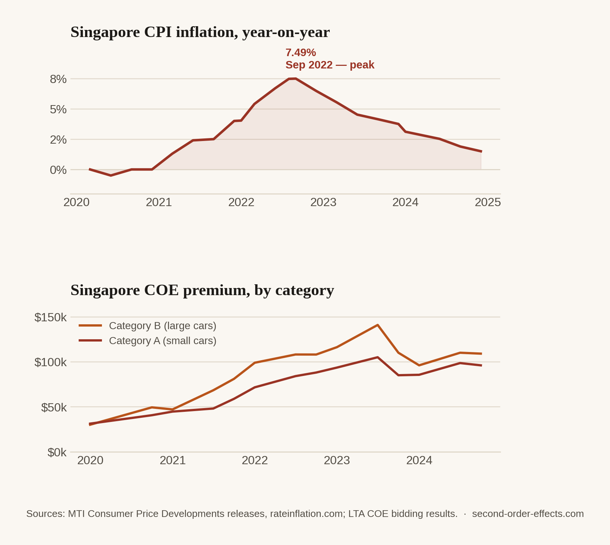

The World's Most Expensive City, in the Most Expensive Year
In December 2022, Singapore tied New York as the most expensive city on earth — the same year it absorbed a war in Europe, a Fed on the warpath, and a shipping system under strain. A look at how it all landed in one place at once.
Most of what I've written on this site treats one event at a time: a war, a rate decision, a shipping disruption, traced forward to wherever it eventually lands. This one works backward instead. It starts from a single fact — that Singapore, in December 2022, tied with New York as the most expensive city in the world, the eighth time in ten years it had held that title — and asks how many of the threads covered elsewhere on this site actually converged to produce it.
The numbers, stacked
Singapore's inflation rate hit 6.13% in 2022, up 3.81 percentage points from the year before, and stayed elevated into 2023 at 4.83%. Within that, monthly year-on-year inflation ran as high as 7.5% in August and September 2022 — a level of price growth that a country with as tight a grip on its currency, and as long a run of low, stable inflation, hadn't dealt with in a generation. Housing rents and car costs, the latter driven by Certificate of Entitlement quotas that keep vehicle supply deliberately scarce, stayed firm throughout, layering structural cost pressure on top of the imported, global kind.

None of that inflation was really "Singapore's" in origin. Singapore doesn't produce much energy, doesn't set global shipping rates, and doesn't control the US Federal Reserve. It is instead close to a pure receiver of the effects described elsewhere on this site: a trade-dependent, import-dependent, currency-open economy sitting downstream of essentially every global shock at once. The war pushed up energy and food prices worldwide. The Fed's tightening cycle pulled capital out of the region and strengthened the dollar against almost everything, making imports costlier in local-currency terms right across Asia. And as a manufacturing and trade hub, Singapore's own export-led sector — roughly 20 to 25% of GDP — went quiet as global demand cooled, even as the cost side of its economy stayed under pressure. Higher costs and softer growth, arriving in the same twelve months, is about as uncomfortable a combination as an economy can be handed.
A hub absorbs what passes through it
There's a specific irony in Singapore's position worth sitting with: the qualities that make it a global trade and financial hub — open capital markets, heavy trade dependence, a currency that's freely convertible and closely watched by global investors, a port that touches a meaningful share of the world's container traffic — are the same qualities that make it unusually exposed to shocks that originate everywhere else. Being extremely well-connected to the global economy means importing more of that economy's turbulence, not less. The Port of Singapore's own experience captures this neatly: vessel arrival tonnage hit a record above 3 billion gross tonnes in 2023, even as average waiting times rose roughly 20% the same year, because the Red Sea crisis was rerouting congestion into every major transshipment hub simultaneously, Singapore included.
A country doesn't need to be involved in a war, a rate decision, or a shipping attack to feel all three in the same calendar year. It just needs to be well-connected enough to the rest of the world for all three to arrive at its door.
Writing this from inside it
I spent this period as a few different people at once: an undergraduate at NTU, then an intern moving between a startup, a statutory board, and a systems integrator, and throughout all of it, someone helping run a family business where every cost the other five pieces on this site describe — fuel, gas, currency, shipping — eventually landed on a spreadsheet I had to make sense of. That combination is a large part of why I ended up back in a classroom this year for a Master's in Finance rather than moving straight into another operating role: I wanted the formal version of the pattern-matching I'd already been doing informally, under pressure, with real numbers attached. Putting these six pieces together over the past several months, the thing that's stuck with me most isn't any individual number — it's how short the distance actually is between an event that feels far away and a line item on a bill in front of you. A war doesn't need to reach a border for its consequences to reach a household. A rate decision doesn't need translation to matter to someone with no stake in US monetary policy at all. That's the whole thesis of this site: the first-order effect is the story everyone already knows. The second-order effect is where you actually live.
Sources
- Macrotrends — Singapore inflation rate, 1961–2025
- East Asia Forum — Singapore's economy weathered the storm in 2023
- SingSaver — cost of living in Singapore, 2023
- Maritime Fairtrade — Singapore maritime industry, 2024 outlook
- Chart data compiled from MTI Consumer Price Developments releases and LTA COE bidding results, 2020–2024.
Comments